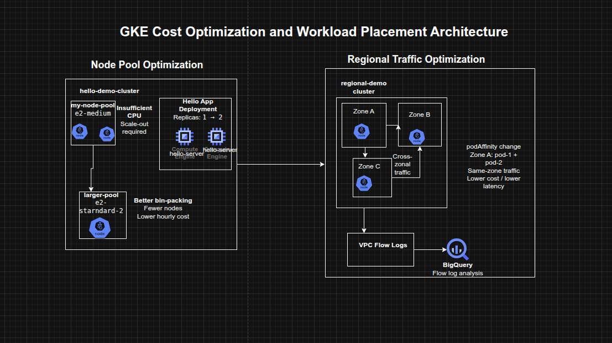

Cost Optimization for GKE Nodes and Regional Workloads on Google Cloud
Cost Optimization for GKE Nodes and Regional Workloads on Google Cloud
Timeline: December 2025
Role: Cloud Engineer / Site Reliability Engineer
Skills: Google Kubernetes Engine (GKE), Node Pools, Machine Type Optimization, Regional Clusters, Pod Scheduling, VPC Flow Logs, BigQuery, Cost Optimization, Kubernetes Affinity
Project Summary
This project focused on optimizing the infrastructure cost of Google Kubernetes Engine (GKE) workloads by improving node pool sizing, workload placement, and inter-zonal traffic efficiency. The work involved analyzing the resource profile of a sample application, scaling the workload, migrating it to a more cost-efficient node pool with a better-shaped machine type, and then exploring the network cost implications of running chatty pods across zones in a regional cluster.
The implementation demonstrated how cost optimization in GKE is not limited to choosing cheaper machine types, but also depends on bin-packing efficiency, regional architecture decisions, and reducing unnecessary cross-zonal traffic.
Objectives
- Examine node-level resource utilization of a GKE workload
- Scale an application and observe infrastructure impact
- Migrate workloads to an optimized machine type in a new node pool
- Explore regional cluster design tradeoffs
- Enable and inspect VPC flow logs for pod communication
- Reduce inter-zonal traffic costs by changing workload placement
Architecture Overview
The architecture consisted of:
- A zonal GKE cluster hosting a Hello application deployment
- An initial node pool using smaller e2-medium machines
- A second node pool using a larger e2-standard-2 machine type for improved packing efficiency
- A regional GKE cluster spanning multiple zones
- Two application pods deployed across different nodes and zones
- VPC Flow Logs enabled for subnet-level traffic visibility
- A BigQuery dataset used to inspect flow log data by source and destination zone
- Pod scheduling changes using pod affinity / anti-affinity to influence zonal placement

Implementation & Highlights
1. Understanding the Initial Cluster Shape
- Examined the Hello demo cluster running on two
e2-mediumnodes - Reviewed node-level CPU and memory requests for the Hello application and GKE system components
- Observed that CPU was constrained sooner than memory, indicating inefficient resource fit for the workload :contentReference[oaicite:1]{index=1}
2. Scaling the Hello Application
- Increased the Hello application replicas from 1 to 2
- Observed scheduling pressure and insufficient CPU conditions
- Resized the existing node pool to three nodes to accommodate the added workload
- Confirmed that scaling on the original machine type led to underutilized memory and suboptimal node efficiency :contentReference[oaicite:2]{index=2}
3. Optimizing Node Pool Machine Type
- Created a new node pool using
e2-standard-2 - Cordoned and drained the original node pool
- Migrated workloads to the new pool
- Deleted the old node pool after workload migration
- Demonstrated that the same workload that required three
e2-mediumnodes could run on a single larger node more efficiently :contentReference[oaicite:3]{index=3}
4. Cost and Bin-Packing Analysis
- Compared the cost and packing behavior of smaller shared-core nodes versus a larger standard node
- Identified that better workload packing reduced waste and slowed cost growth during scale-out
- Reinforced the importance of aligning machine type selection to application resource shape rather than assuming smaller nodes are always cheaper :contentReference[oaicite:4]{index=4}
5. Exploring Regional Cluster Tradeoffs
- Reviewed the tradeoffs between zonal, multi-zonal, and regional GKE clusters
- Considered availability, performance, and cost implications across regions and zones
- Positioned regional clusters as a strong availability option, but one that requires more careful traffic placement to avoid unnecessary network cost :contentReference[oaicite:5]{index=5}
6. Creating and Testing a Regional Cluster
- Created a new regional cluster
- Deployed two pods designed to run on separate nodes using pod anti-affinity
- Generated traffic between pods using
ping - Verified that the pods were initially running in different zones and communicating across zone boundaries :contentReference[oaicite:6]{index=6}
7. Enabling Flow Logs and Exporting to BigQuery
- Enabled VPC Flow Logs for the subnet used by the regional cluster
- Exported flow logs through a sink into a BigQuery dataset
- Queried source and destination zones to identify cross-zonal communications between cluster nodes
- Used log analysis to make cost-aware placement decisions based on actual network behavior :contentReference[oaicite:7]{index=7}
8. Minimizing Cross-Zonal Traffic Costs
- Changed pod scheduling behavior from anti-affinity to affinity
- Recreated the second pod so it would land on the same node as the first
- Verified lower latency and reduced inter-zonal communication
- Connected the optimization to lower VM-to-VM egress cost for chatty workloads within a regional cluster :contentReference[oaicite:8]{index=8}
Design Decisions
- Used node pool migration instead of in-place reshaping to move workloads safely to a more efficient machine type
- Used a regional cluster to study high-availability tradeoffs beyond a single-zone design
- Enabled VPC Flow Logs and exported them to BigQuery to validate traffic patterns with data rather than assumptions
- Used pod affinity and anti-affinity to control placement and reduce unnecessary cross-zonal communication
- Treated cost optimization as a combination of:
- workload fitting
- node efficiency
- cluster topology
- network behavior
Results & Impact
- Successfully optimized a GKE workload by moving from a less efficient node pool to a better-shaped machine type
- Demonstrated practical use of:
- node pool migration
- workload scheduling controls
- regional cluster cost analysis
- flow log inspection
- BigQuery-based traffic analysis
- Improved understanding of how GKE costs are influenced not only by node pricing, but also by bin-packing efficiency and network traffic patterns
- Built a strong case study for cost-aware Kubernetes platform operations
Tools & Technologies Used
- Google Kubernetes Engine (GKE) – Container orchestration platform
- Compute Engine machine types – Node pool optimization
- Kubernetes Deployments – Workload scaling
- Node Pools – Infrastructure segmentation by machine type
- Pod Affinity / Anti-Affinity – Workload placement control
- VPC Flow Logs – Network traffic visibility
- BigQuery – Flow log analysis
- Cloud Logging – Traffic export and inspection
Outcome
This project demonstrates the ability to optimize GKE infrastructure cost and efficiency by right-sizing node pools, analyzing scaling behavior, and minimizing unnecessary cross-zonal traffic in a regional cluster. It highlights practical skills in Kubernetes workload placement, infrastructure efficiency, observability-driven optimization, and cloud cost engineering, which are highly relevant to cloud engineering, platform engineering, and site reliability roles.